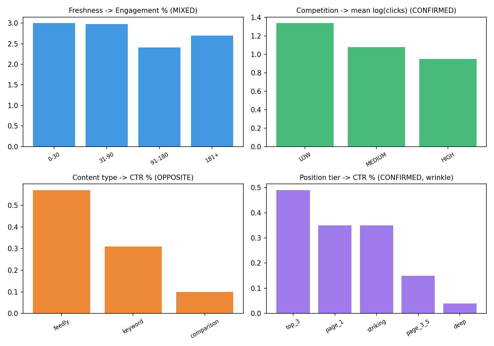
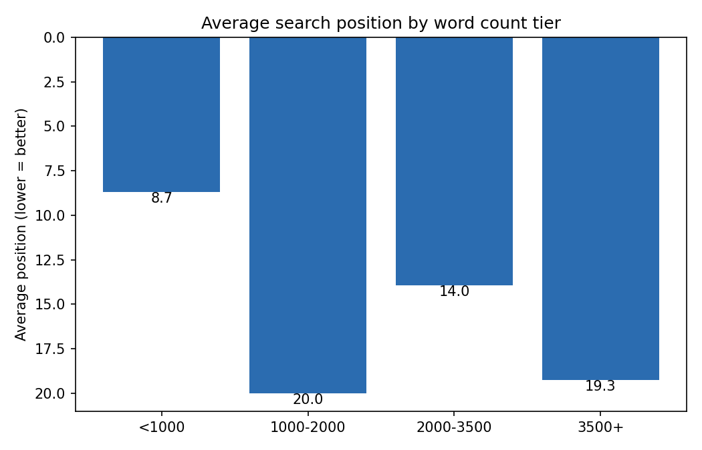
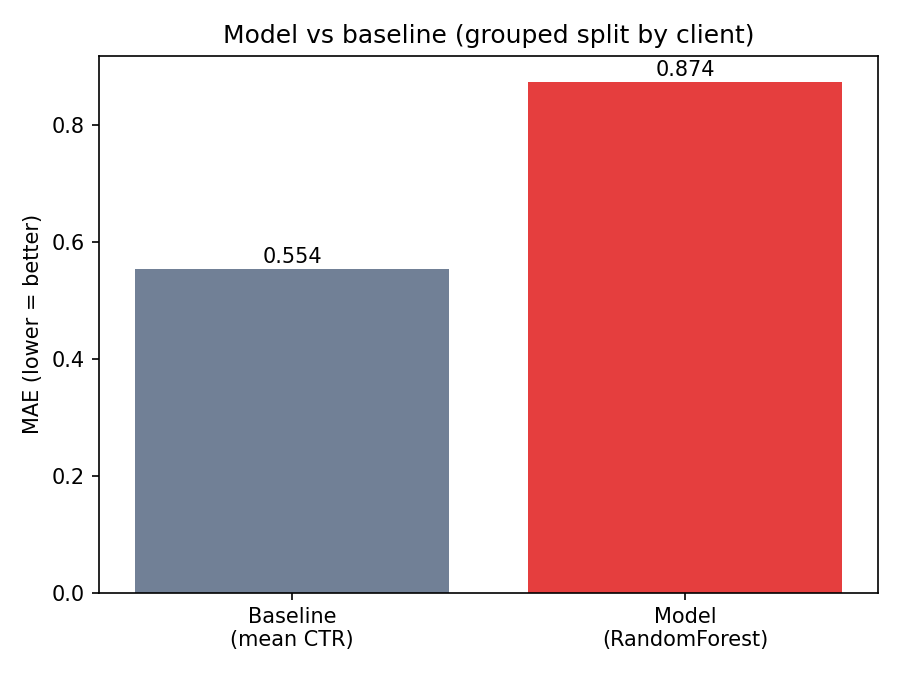
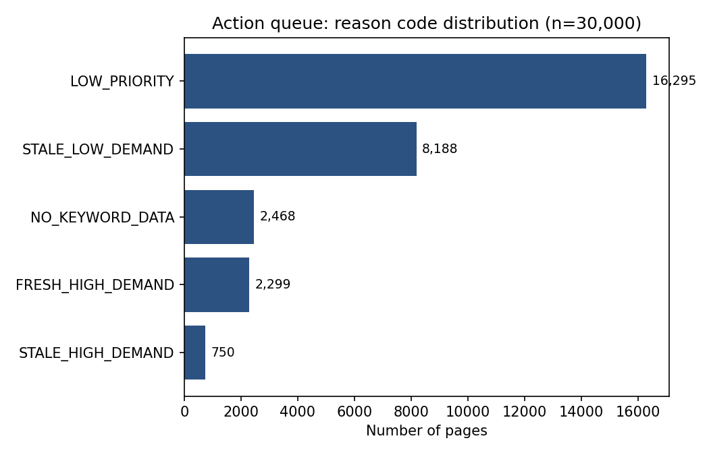

01 Introduction
Content teams managing thousands of pages face a resourcing problem, not a modeling luxury: which pages deserve review effort first? Product intuition often leans on a handful of assumptions — that stale content underperforms, that competitive keywords are worth chasing, that certain formats naturally win more clicks. This project tests those assumptions directly against real performance data, rather than taking them on faith, and asks a second question that's easy to skip: does a trained model actually add value over a simple, transparent rule?
The decision this supports is concrete: which of ~30,000 live pages should a content team look at first, and can that prioritization be trusted.
02 Data
This analysis uses the FlyRank ML Internship dataset — a public teaching slice of
content_refresh_anonymized.csv, 30,000 rows, one row per content page, covering
a 90-day performance window (clicks, impressions, engagement, and search position).
Handling and exclusions, stated plainly:
- 1,205 rows had
avg_position == 0, which the data dictionary defines as "no position data available," not an actual first-place ranking. These were excluded from any analysis involving position. - 2,096 rows (all
feedly articlecontent type) had no keyword-context data at all (search volume, competition, CPC). These were kept but flagged distinctly rather than silently imputed as zero-demand. - A
client_idfield identifies which of 32 clients each page belongs to. It was used only to group train/test splits and is never disclosed in any exported artifact.
03 Methodology
Every candidate signal feature (content properties: word count, age, days
since update, content type, keyword competition, search volume) was kept strictly separate
from every outcome metric (clicks, CTR, position, engagement) — confirmed by
an explicit leakage check before any modeling began. Missing numeric signals were filled with
-1; missing categorical signals with "unknown".
Baseline: a transparent rule — a page is flagged for review if it is stale
(days_since_last_update ≥ 91) and has real keyword demand
(search_volume ≥ 100).
Model: a RandomForestRegressor (200 trees, max depth 8) predicting click-through rate from the 13 signal features.
client_id instead, verified to have zero
client overlap between train and test.
04 Results
Four signal assumptions, audited
| Claim tested | Verdict |
|---|---|
| Fresher content gets higher engagement | MIXED |
| Higher-competition keywords get fewer clicks | CONFIRMED |
| Keyword-optimized formats get higher CTR | OPPOSITE |
Better position means higher CTR (the assumption behind FlyRank's needs_ctr_fix flag) | CONFIRMED* |

Only the competition→clicks relationship was clean and monotonic. Freshness alone isn't a reliable lever for engagement. The claim that "keyword-optimized" content wins on CTR does not hold — worth knowing before a content strategy leans on it. *The position→CTR pattern is mostly confirmed, but page-1 and striking-distance pages had statistically indistinguishable CTR, which shouldn't happen if position cleanly predicted CTR.
One more signal, on its own

Model vs. baseline
| Approach | MAE | R² |
|---|---|---|
| Baseline (predict mean CTR) | 0.554 | -0.066 |
| Model (RandomForestRegressor) | 0.874 | -1.885 |

05 Limitations
- Cross-sectional, not causal. This is a single 90-day snapshot. Every relationship reported here is an observed association, not evidence of cause and effect — content type, competition level, and freshness were not randomly assigned.
- The model underperforms. Because it lost to a two-line rule under honest validation, this project ships the rule, not the model. That's a legitimate finding, not a gap: it suggests CTR here may be more client-specific than purely content-signal-driven, or that a richer feature set / more data would be needed to beat the baseline.
- Small samples in places. The freshness tiers 31–90 days and 181+ days each contain only ~175 rows, well above the analysis floor but thin compared to the other tiers — read those specific comparisons with extra caution.
- Single snapshot, no trend data. Nothing here can speak to how a page's performance changes over time, seasonality, or the effect of any specific edit.
06 Ranked recommendations
Because the trained model did not outperform the simple rule, this is the recommendation
engine that ships: a page is flagged STALE_HIGH_DEMAND when it hasn't been
updated in 91+ days and its target keyword has real search demand
(search_volume ≥ 100) — real opportunity being left on the table.

- Is it already ranking well? One flagged page in hand-review had
avg_position = 1.0— already the best possible position — despite being flagged. The rule sees staleness and demand, not current success. - Is it a
feedly articlewith no keyword data? The score isn't meaningful there.
No-go: never auto-publish content changes from this queue, and never use a low score to justify reducing investment in a page that's already performing well — absence from the list is not evidence of nothing to improve.
07 Reproducibility
Every number on this page traces back to a notebook in the project repository, run against
the real dataset with a fixed random_state=42 throughout.